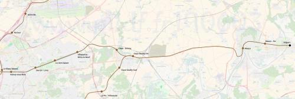

RER G Meaux par Aulnay
RER G Meaux par Aulnay
Drancy - Trilport
Création de la ligne G du RER.
Cette branche du RER G parallèle à la nationale 3 servira à améliorer les connexions entre Meaux et la Seine-Saint-Denis, cette extension favorisera un report du trafic automobile vers le RER. Cette branche offrira à quelques communes desservies actuellement par le RER B un complément de desserte pour atteindre plus rapidement l'est et le sud de Paris.
On pourra envisager une permutation des services avec le RER B:
Le RER B serait terminus Meaux et le RER G terminus Mitry-Claye ou Damartin-Juilly-Saint-Mard.
La section Claye-Gressy - Meaux sera partagée avec la tangentielle Val-d'Oise et les TER en provenance de l'est et à destination de l'aéroport de Roissy.
Voir les autres projets associés à cette ligne
Carte
{kind=link}

Cliquer pour agrandir
Stations
Si ce projet vous intéresse n'hésitez pas à le (re-)partagez sur les réseaux sociaux ou par courriel ou à en parler autour de vous.
Si vous souhaitez travailler à la concrétisation de ce projet, passez à l'action et contactez nous.
Commenter